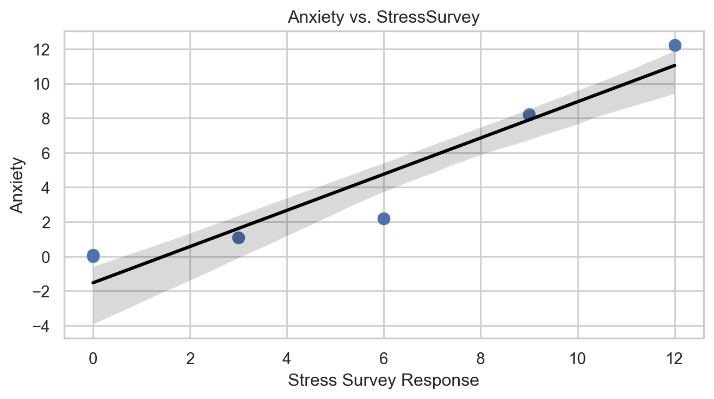
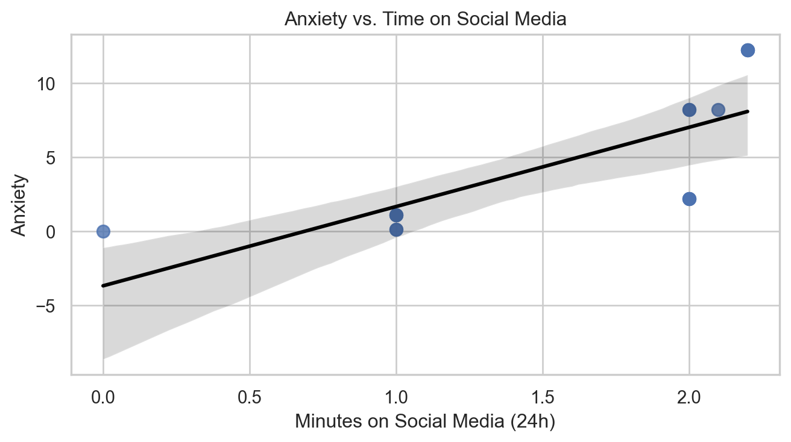

| Estimate | Std. Err. | p-value | |
|---|---|---|---|
| Intercept | -1.524 | 0.7069 | 0.0504 |
| StressSurvey | 1.047 | 0.0962 | 0.0000 |
Regression & Interpretability Challenge
Don’t Trust Linear Models - The Perils of Non-Linearity
Answers
Question 1 — What happens when I regress Anxiety on StressSurvey alone?
The proxy-only regression gives an intercept of -1.52 and a slope of 1.05, both flagged as significant. The true equation never mentioned StressSurvey, so that slope is the model bending the curve to mimic stress. The negative intercept is the giveaway that the straight line is forcing its way through a non-linear shape.
Question 2 — Does the StressSurvey scatter plot look linear?
Not really. The regression line cuts across a bend: low-stress points sit under the line while the high-stress clump sits way above it. The fit looks fine numerically, but the shape screams “use the real stress measure.”

Question 3 — What if I regress Anxiety on Time alone?
Time by itself looks ultra-important: the slope jumps to 5.34 with a loud p-value, even though the true effect is only 0.1. Leaving out stress pushes the regression to pin everything on screen time.
| Estimate | Std. Err. | p-value | |
|---|---|---|---|
| Intercept | -3.6801 | 2.2331 | 0.1233 |
| Time | 5.3406 | 1.3049 | 0.0013 |
Question 4 — Does the Time scatter plot back up that story?
Not really. Anxiety is flat for the first two hours of social media and then shoots up for the stressed students who also happen to be online longer. The best-fit line tilts up anyway, so it tells a causal story that simply is not there.

Question 5 — What happens when I add StressSurvey and Time together?
The model fires off a StressSurvey coefficient of 1.43 and flips the Time coefficient to -2.78, both with tiny p-values. We now have “more time online lowers anxiety” as a statistically significant claim, even though the true data-generating process says the opposite.
| Estimate | Std. Err. | p-value | True | |
|---|---|---|---|---|
| Intercept | 0.5888 | 1.0339 | 0.5795 | 0.0 |
| StressSurvey | 1.4269 | 0.1722 | 0.0000 | NaN |
| Time | -2.7799 | 1.1111 | 0.0278 | 0.1 |
Question 6 — What if I use the actual Stress measure with Time?
Using the real stress variable recovers the known equation almost perfectly: intercept 0, stress coefficient 1, and time coefficient 0.1. With the right inputs the regression finally behaves.
| Estimate | Std. Err. | p-value | True | |
|---|---|---|---|---|
| Intercept | -0.0 | 0.0 | 0.0804 | 0.0 |
| Stress | 1.0 | 0.0 | 0.0000 | 1.0 |
| Time | 0.1 | 0.0 | 0.0000 | 0.1 |
Question 7 — How do the two multiple regressions compare?
Both models boast high \(R^2\), and both tout significant coefficients on every predictor. Yet only the model with true stress lands on the correct signs and magnitudes. The survey-based model looks great on paper while utterly misrepresenting the time effect.
| Model | R-squared | Stress/Survey coef | Stress/Survey p-value | Time coef | Time p-value | |
|---|---|---|---|---|---|---|
| 0 | Anxiety ~ StressSurvey + Time | 0.935 | 1.4269 | 0.0 | -2.7799 | 0.0278 |
| 1 | Anxiety ~ Stress + Time | 1.000 | 1.0000 | 0.0 | 0.1000 | 0.0000 |
Question 8 — How could these results get spun?
The survey-based model would yield a headline like “More Instagram Time Calms Stressed Students, Study Finds.” The model with true stress screams “Stress and Screen Time Combine to Spike Anxiety.” A cautious parent will latch onto the second story; platform execs would wave around the first one as proof their apps are harmless.
Question 9 — Can a smarter slice of the data fix the proxy problem?
I limited the sample to StressSurvey ≤ 6, where the survey scale tracks blood-test stress in neat 3-point steps. In that regime the regression lands on a StressSurvey slope of 0.33 (one-third of the true stress effect) and the correct 0.1 for time. The subset keeps significance while staying aligned with the real equation.
| Estimate | Std. Err. | p-value | True | |
|---|---|---|---|---|
| Intercept | 0.0000 | 0.0 | 0.3844 | 0.0000 |
| StressSurvey | 0.3333 | 0.0 | 0.0000 | 0.3333 |
| Time | 0.1000 | 0.0 | 0.0000 | 0.1000 |